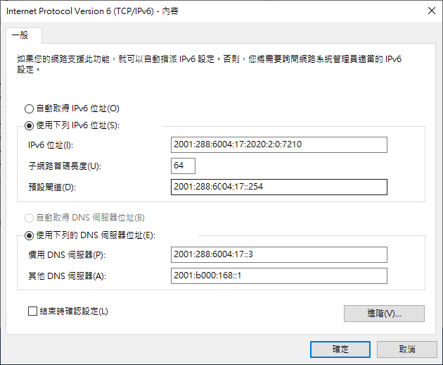
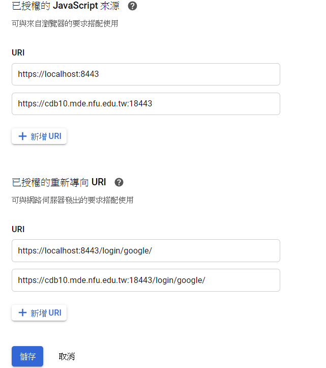

SSH setting <<
Previous Next >> Weeks Meeting
Week15-18
Api限制用戶遠端控制(要先有自己的DNS)
1.先開啟之前所設定好的ubuntu虛擬主機，VirtualBox的IPv6埠號也要檢查有沒有錯誤。
2.將虛擬主機tmp下的oauth_scrum.txt內容，改為之前所設定好的Google API憑證帳號密碼，使用sudo vi oauth_scrum.txt來進行編輯。
3.必須要有自己的DNS才可以讓其他台電腦進行連線(只能透過老師幫忙設定才行)，沒有的話就只能在自己的電腦內進行測試。

4.因為有DNS的關係，所以網路也必須要設定才行，IPv6位置跟之前一樣就行了，新增一個慣用的DNS伺服器，可以到cmd用nslookup來查詢。

5.自己的 Google API 的''OAuth 客戶端ID''也要進行URI的設定，這樣子別人才可以用DNS網址來進行連線。

6.在虛擬主機開啟python3 wsgi.py後，另一台電腦就可以使用https://cdb10.mde.nfu.edu.tw:18443 來進行google登入認證連線了。
7.一樣是要關掉proxy和防火牆才可以連線，不過還有很多問題沒有解決，目前還沒有辦法進行編輯，就只能認證而已。
IPv6 連線個人倉儲
1.先設定好IPv6 遠端控制伺服、IPv6 Ubuntu對外連線設定
2.開啟主機後，在tmp下把自己的倉儲給clone下來(用submodules)
3.輸入ifconfig查詢主機IPv6的IP位置，進入自己倉儲的cmsimde
4.輸入sudo vi wsgi.py更改host，存儲後輸入python3 wsgi.py來啟動
5.輸入網址https://[2001:288:6004:17:2020:2:0:7210]:19443開啟
6.記得要更改vitualbox網路埠號，加上一個新的19443 以及 9443
影片連結:https://youtu.be/zVGsjqsvlEc
SSH setting <<
Previous Next >> Weeks Meeting